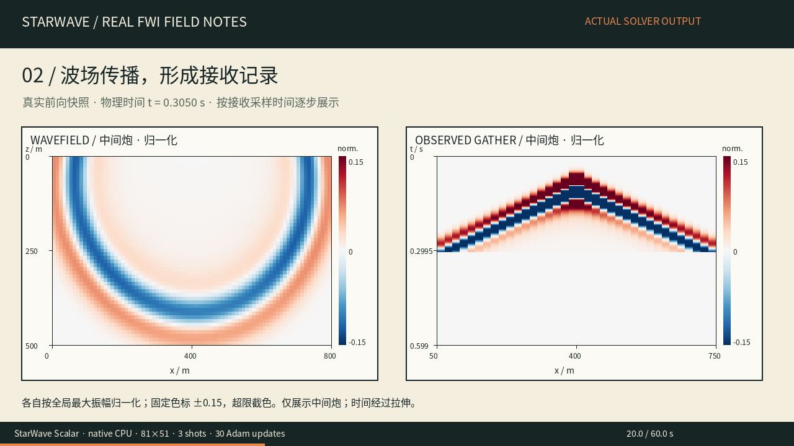
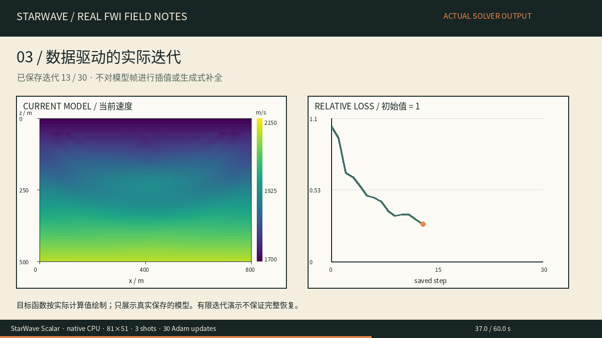

01 / PHYSICS◎
不止一种波。
从 Scalar 到 Elastic，探索不同波动描述；VTI、VRZ、VRR 对应不同物理建模路径。
ScalarElasticVTIVRZVRR
从地表的一次激发，到地下的万千回响。
用 StarWave 探索波传播、物理建模与可微计算。
调试、探索，再到一次新的尝试。
一段关于科研、困境与重新出发的电影式短剧。
0–16 秒：小熊，在电脑前反复调试，程序仍然报错。16–32 秒：查找 Issues，发现 StarWave，尝试新的工具。32–48 秒：查看计算画面并整理成论文。48–56 秒：剧情中的录用消息到来。56–64 秒：放低可乐罐，露出轻松的笑容。全片为静态分镜，背景为原创配乐，无口播。
虚构科研短剧；真实数值结果见下方独立的 FWI 演示。观看下方真实 FWI 数值演示 →
60 秒，真实波场、合成接收记录与实际反演迭代。
StarWave 原生 CPU 的一次小尺度 Scalar FWI 演示。
所有科学画面均来自同一次 StarWave Scalar / native CPU 计算。波场展示中间炮；模型帧是实际保存的迭代，无插值补全。视频为拉伸时间后的播放，不是实时性能演示。
0–12 秒：对照合成真值与初始速度模型，标出震源和检波器。12–28 秒：显示中间炮的真实波场快照，并按物理时间展开接收记录。28–48 秒：显示 31 个实际保存模型及相对目标函数。48–60 秒：用统一 1700–2150 m/s 色标比较真值、初始与最终模型。数据失配下降 85.85%，速度 RMSE 从 50.76 降至 45.59 m/s；仍有未恢复区域。这是合成教学实验，无声。

真实前向快照；归一化振幅固定色标 ±0.15，超限截色。

31 个实际保存状态；速度色标始终保持 1700–2150 m/s。
StarWave Scalar，native_cpu；10 m 网格间距，1 ms 时间步长，600 个采样点；3 炮，每炮 36 个检波器；12 Hz 震源，四阶空间精度，12 格 PML。30 次 Adam 更新；学习率 8 m/s，伴随梯度经过 5×5 方窗平滑，顶部 5 格冻结，速度限制在 1500–2350 m/s。
这是小尺度合成教学演示。合成观测与反演使用相同离散模型和已知震源，属于 inverse crime 设置；稀疏地表采集对深部照明有限。最终速度 RMSE 仅下降约 10.18%，不能解读为完整恢复、实测成果或通用收敛保证。
波场和记录各按各自全局最大绝对振幅归一化，固定显示范围 ±0.15，超过范围的值截色；这不改变原始数据。相对目标函数以初始值为 1。所有真值、初始及迭代速度模型使用统一色标。
选择适合问题的物理描述，
把计算连接到你的研究工作流。
从 Scalar 到 Elastic，探索不同波动描述；VTI、VRZ、VRR 对应不同物理建模路径。
认识 GSLS 与 Born 相关能力，为衰减描述与线性化建模问题选择合适的算子。
围绕 PyTorch 组织工作流，结合原生 CPU 与 CUDA 后端开展计算。具体支持范围请查阅文档。
物理模式、维度、梯度与后端的可用组合依版本及算子而异；以上标签不表示所有模式均支持全部功能。
从官方文档开始，了解物理模式、接口与使用约束。